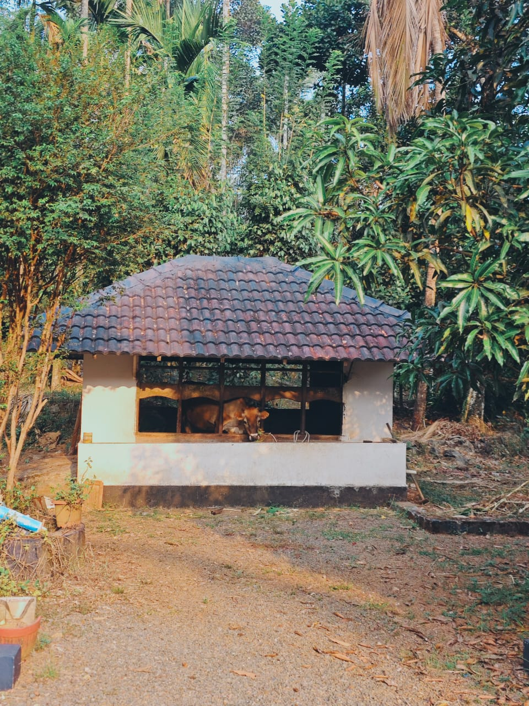
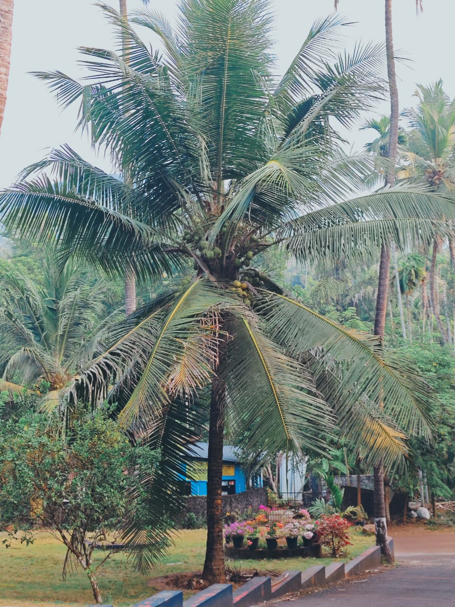
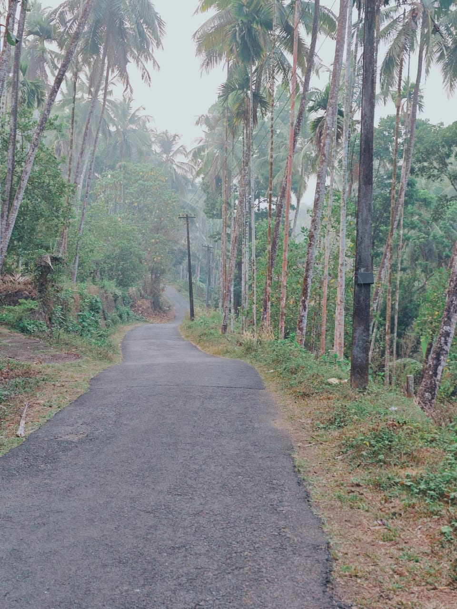
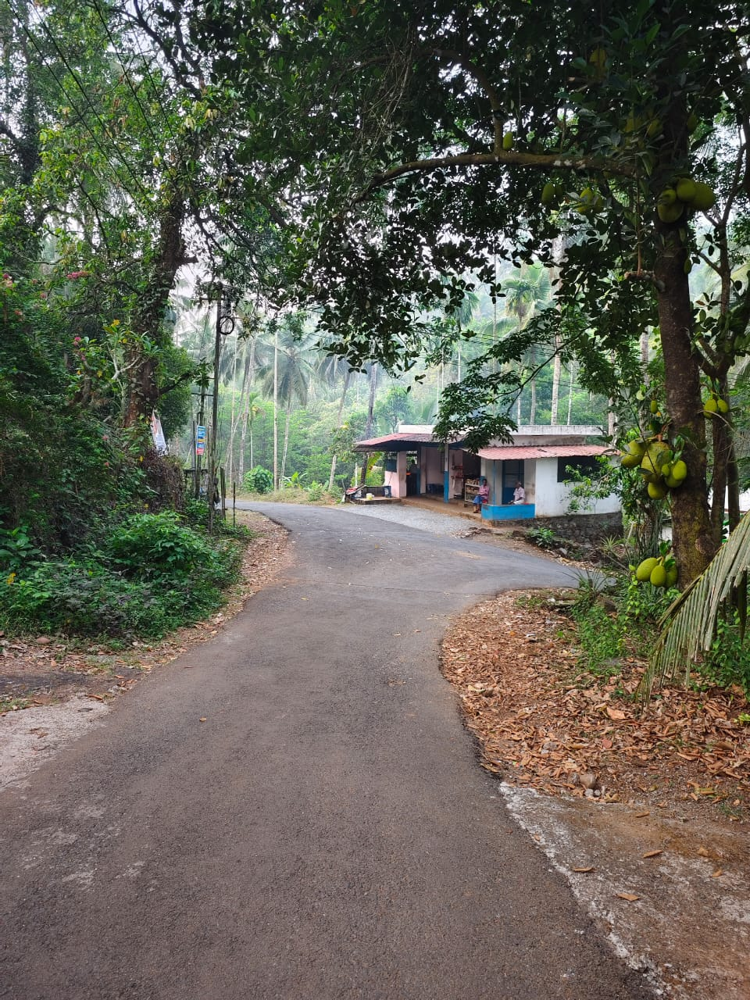
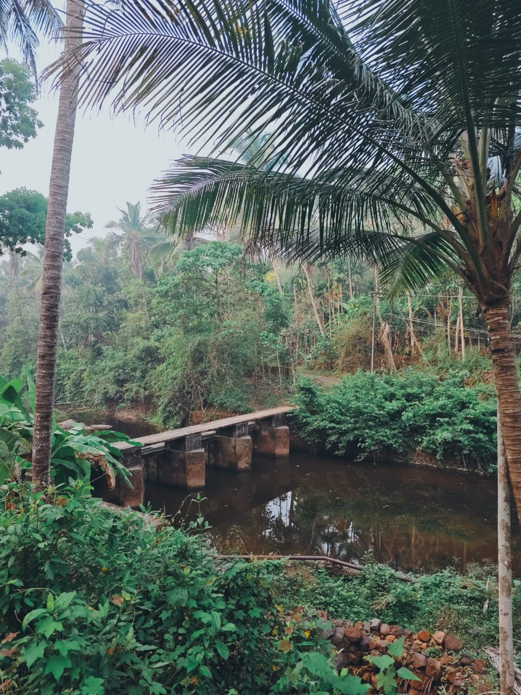

About Me
My name is Aswin. I have passed to 4th standard.
I like playing keyboard, chess, cycling, fishing, cooking, and learning Karate.
I enjoy learning new things and building this website about my village and my life.
About My Village
git config --global --unset core.askpass My village is a peaceful and beautiful place surrounded by many trees, coconut palms, and green hills. The roads in my village are quiet and clean, and people here live a simple and happy life.
In the mornings, you can hear birds singing and see farmers working in the fields. Many people grow fruits like jackfruit, coconut, and banana. The fresh air and natural beauty make my village a wonderful place to live.
Rubber plantations are also very common in my village. Many farmers grow rubber trees and collect rubber latex early in the morning. Rubber farming is an important part of the village economy and daily life.
I enjoy cycling on the small roads, fishing in nearby rivers, and spending time outdoors with my friends. My village is calm, friendly, and full of nature.
Photo Gallery of my village






My School

My school name is GHSS Kaniyanchal. It is a government school in a rural area of Kannur district, Kerala. The school started in 1956 and teaches students from primary classes to higher secondary (+2).
My school has good facilities like classrooms, drinking water, toilets, a playground, and computers. Many students study here and learn many things.
I like my school very much because teachers are kind and I enjoy learning with my friends.
My Hobbies
🎹 I enjoy playing keyboard and learning new songs.
♟️ I like playing chess and solving puzzles.
🚴 I love cycling around my village.
🥋 I am learning Kempo Karate which teaches discipline and strength.
🎣 I enjoy fishing in rivers and ponds near my village.
🍳 I like helping in the kitchen and learning simple cooking.
Photo Gallery